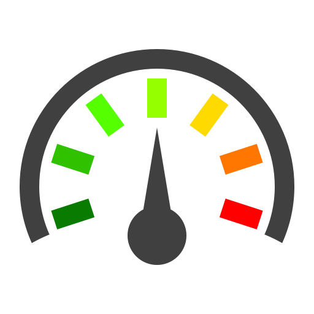

Składniki:
Ciasto:
- 1 szklanka mąki przennej
- 2 jajka
- 1,5 szklanki mleka
- szczypta soli
- łyżka cukru
Masa Rafaello:
- 250 ml śmietanki kremówki 30 %
- 2 - 3 łyżki cukru pudru
- 250 g mascarpone
- 2 łyżki wiórek kokosowych
Przygotowanie:
-
Krok 1: Przygotowanie Ciasta:
-
Krok 2: Pieczenie Naleśników:
-
Przygotowanie Masy Rafaello:
-
Składanie Naleśników z Masą Rafaello:
Teraz możesz cieszyć się pysznymi naleśnikami w wersji Rafaello! Smacznego!